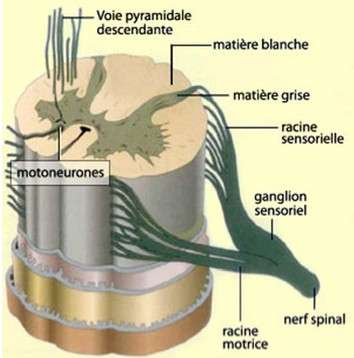
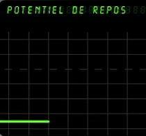
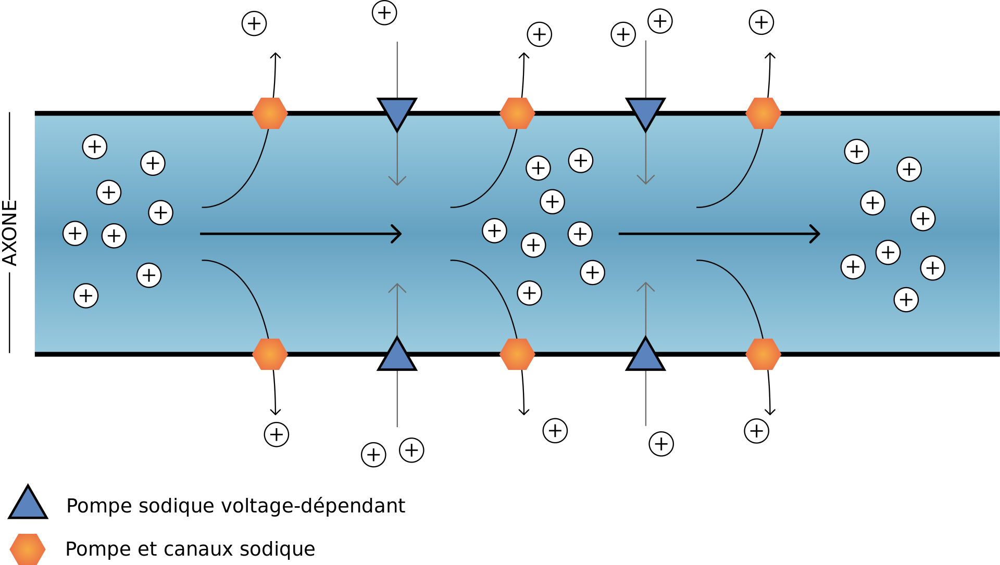

Lors d’un accident grave, il arrive que les victimes perdent la motricité ou les sensations (le sens du toucher) de leurs membres.
Ces phénomènes sont dus à des lésions des voies nerveuses. Nous nous sommes demandé, si l’on pouvait donc faire quelque chose face à ces
problèmes comme par exemple, en les remplaçant.
Nous avons rapidement créé un lien de ressemblance entre un
câble électrique et un nerf
 Comparaison entre un nerf et un câble éléctrique
(un câble (=le nerf), composé de fils (=les fascicules), eux-mêmes composés de fils très fins (=les axones) qui conduisent tous deux un
courant de nature électrique).
Malheureusement, nous avons très vite remarqué que ces deux fils sont différents.
Comparaison entre un nerf et un câble éléctrique
(un câble (=le nerf), composé de fils (=les fascicules), eux-mêmes composés de fils très fins (=les axones) qui conduisent tous deux un
courant de nature électrique).
Malheureusement, nous avons très vite remarqué que ces deux fils sont différents.
Cette comparaison nous a donc amené, à nous demander s’il est possible de changer un nerf aussi facilement qu’un câble électrique ou même plus simplement : Est-il possible de remplacer des nerfs sensitifs endommagés ou morts ?
Nous répondrons à cette question grâce aux parties détaillées dans le plan ci-dessous :
Un nerf
 Découpe d'un nerf
est une partie du système nerveux.
Le système nerveux est composé du système nerveux périphérique (les nerfs par exemple) et du
système nerveux central (le cerveau avec les neurones et la moelle épinière).
C’est ce système nerveux qui véhicule les informations sensorielles et motrices sous la forme de
Stimulus de nature électrique.
Cette information est transmise par les nerfs, puis dans la moelle épinière
pour arriver dans les neurones du cerveau afin que le message soit traité.
Découpe d'un nerf
est une partie du système nerveux.
Le système nerveux est composé du système nerveux périphérique (les nerfs par exemple) et du
système nerveux central (le cerveau avec les neurones et la moelle épinière).
C’est ce système nerveux qui véhicule les informations sensorielles et motrices sous la forme de
Stimulus de nature électrique.
Cette information est transmise par les nerfs, puis dans la moelle épinière
pour arriver dans les neurones du cerveau afin que le message soit traité.
Les messages passent d’un neurone à l’autre grâce aux
synapses
 Schéma d'un nerf
par une transition chimique.
Une synapse est la région d'interaction entre deux cellules nerveuses qui permet le passage d'un signal.
Le plus souvent, la synapse se trouve entre le bouton synaptique d'un neurone présynaptique et la dendrite.
Schéma d'un nerf
par une transition chimique.
Une synapse est la région d'interaction entre deux cellules nerveuses qui permet le passage d'un signal.
Le plus souvent, la synapse se trouve entre le bouton synaptique d'un neurone présynaptique et la dendrite.
La moelle épinière Schéma d'une découpe de moelle épinière est un prolongement du cerveau. Son rôle est de distribuer les nerfs entre le cerveau et les différentes parties du corps.
Quant aux nerfs, (la partie sur laquelle nous nous sommes penchés) ils sont composés de plusieurs fibres nerveuses (un fascicule) elles-mêmes composées de plusieurs axones (un axone à un diamètre de 50 microns ce qui vaut 50 millièmes de millimètre).
C’est plus précisément dans les axones que les messages nerveux passent. Il y a 2 types d'axones:


Les axones situés dans le nerf ou dans la partie périphérique du système nerveux sont composés d’une gaine de myéline crée par la cellule de Schwann. Ces gaines permettent de transporter les messages nerveux beaucoup plus rapidement. (De 10 à 75 m/s contre 1 à 10 m/s pour les non myélinisé) Le système nerveux central en a également mais contrairement au système nerveux périphérique, la myéline est, cette fois-ci, crée par l’oligodendrocytes et elle n’est pas située partout dans le système nerveux centrale.
Lors de nos recherches, nous avons vu qu'il pouvait y avoir des axones sensitifs et moteurs dans une même fibre nerveuse. Afin simplifier les choses, nous dirons qu’une fibre nerveuse est composée soit uniquement d'axones sensitifs soit d'axones moteurs.
Afin de transmettre les messages nerveux au niveau du nerf, les axones sont traversés par des influx nerveux ou des potentiels d’actions. Au repos, l’axone à un potentiel de -70mV : C’est le potentiel de repos.
Le potentiel d'action, quant à lui est constitué de plusieurs événements :
Le potentiel d'action dure entre 1 et 2 millisecondes.

Plus précisément, à l'initiation du potentiel d'action, lors de la stimulation, les canaux ioniques Na+ (sodium) s'ouvrent et les ions Na+ rentrent dans l'axone, provoquant une dépolarisation et passant le potentiel de la membrane interne de -70mV à +30mV. Cette dépolarisation est dû à une forte concentration de cation (ions positifs) se qui entraine une augmentation de la charge positive à l’intérieur de l'axone.
Puis, une fois le potentiel maximal atteint et la concentration de Na+ équilibrée, une repolarisation se produit. Les canaux ioniques K+ (potassium) s'ouvrent et les ions K+ sortent de l'axone faisant repasser le potentiel de la membrane interne à -70mV. Cette repolarisation est l’inverse de la dépolarisations. Les canaux ioniques s’ouvrent pour que les cations quittent la cellule et que celle-ci retrouve son état initial.
Cela créé une modification de polarité entre l’extérieur et l’intérieur de la cellule. L'influx se déplace le long de l'axone dans une seule direction, vers le système nerveux centrale.

Pour mieux comprendre comment on peut remplacer un nerf, on peut d’abord lister les quelques inconvénients :
Pour essayer d’y voir un peu plus clair, on peut utiliser des outils de la Science de l’ingénieur. Cela nous permet donc de faire intervenir une séquence de cette matière
On peut commencer par une bête à cornes pour définir à qui le produit rend-il service, sur quoi agit-il et dans quel but :

Ensuite, à l’aide d’un diagramme de fonctions de service, on cherche ses fonctions principales (ce qu’il doit faire) et ses fonctions de services (à quelles contraintes, il doit répondre pour être utilisé correctement) :

Fonctions principales
- FP1 : Pourvoir transmettre un message nerveux à travers le nerf synthétique à l’aide de matériaux conducteur.
- FP2 : Permettre au patient que le nerf puisse être installé en toute sécurité et qu’il soit sans danger pour ça sécurité.
- FP3 : Pouvoir transmettre un message nerveux à la même vitesse que dans un nerf.
Fonctions de services
- FS1 : S’adapter aux dimensions nécessaires
- FS2 : S’adapter aux différentes normes de médecines.
- FS3 : S’adapter au système nerveux
- FS4 : S’adapter au système immunitaire et au métabolisme humain.
On pourrait citer encore bien évidemment beaucoup plus de contraintes et de fonctions de services.
Afin d’obtenir plus d’informations sur les études, nous avons voulu contacter et rencontrer un neurochirurgien. Malheureusement notre requête n’a pas abouti due à une absence de réponse au niveau du service de neurologie de l’hôpital de Troyes.
Nous avons également voulu effectuer des expériences, mais par un manque de matériel au sein du lycée, nous n'en n'avons pas eu la possiblité.
Nous avons chercher des études qui nous ont données des informations interessantes.
L’endommagement des nerfs périphériques se produit souvent à la suite d’accidents (accidents de la route, accidents de travail/sports) mais aussi aux mouvements répétés, qui pourraient sectionner complètement ou partiellement le nerf mais également l'écraser.

Les scientifiques ont également découvert que la régénération des axones peut avoir lieu dans les gaines de myéline. Cette régénération peut aller de 1 à 5 mm/jour, mais il faut que la gaine de myéline ou les cellules de Schwann soient encore présente pour que cette régénération se fasse correctement. Les cellules de Schwann sont des cellules qui permettent de créer ou de régénérer la gaine de myéline. Celle-ci entoure un ou plusieurs axones suivant le nerf, formant en moyenne une centaine de couche pour protéger l'axone.
De nombreuses autres études actuelles visent à recréer une fausse gaine de myéline ce qui permettrait à l’axone de se régénérer même si la gaine de myéline a été touchée. Malheureusement, aucune étude n’a pour l’instant atteint ce but.
Les plus avancées affirment que les chercheurs peuvent créer des biomatériaux qui faciliteraient la réparation des nerfs périphériques. Tandis que la régénération des nerfs centraux (les nerfs optiques et les cellules nerveuse de la moelle épinière) reste pour l'instant un defi majeur. Ces matériaux seraient créés à partir de fibres de soie obtenue grâce à des cocons de bombyx du mûrier. Ce matériau est déjà utilisé en médecine régénérative. Il est biocompatible et peut être amélioré en créant des nanofibres par des modifications chimiques (Électrofilage) qui permettraient de faciliter la repousse du nerf. Donc la gaine de myéline pourrait être remplacée mais il faudrait tout de même que la cellule de Schwann reste en bonne état pour permettre la greffe.
En conclusion, on peut dire que le remplacement est extrêmement compliqué du à de nombreuses contraintes et un système extrêmement bien rodé. Malgré cela, les scientifiques du monde entier travaillent d’arrache-pied pour trouver une solution à ce problème qui est sur la bonne voie.